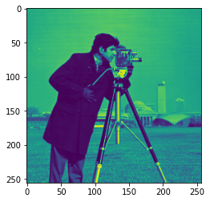

plt.imshow(img)
plt.show()
%%capture
import numpy as np
import scipy.sparse as sp
from scipy.ndimage import gaussian_filter
from PIL import Image, ImageOps
# Load blurred image
img = Image.open("cameraman.png")
img = ImageOps.grayscale(img)
img = np.asarray(img)
img = img/255
M, N = img.shape
# # Load blurred image
# blurred_img = Image.open("blurred_grand_canyon.jpg")
# blurred_img = ImageOps.grayscale(blurred_img)
# blurred_img = np.asarray(blurred_img)
# blurred_img = blurred_img/255
# M, N = blurred_img.shape
# Define blur operator using sigma
blur_sigma = 20.0
blur_op = lambda x: gaussian_filter(x, blur_sigma, mode='wrap')
blurred_img = blur_op(img)
# Compute diagonalization for our L matrix
rand_img = np.random.randn(M,N)
mat_prod_rand_img = np.fft.fft2(blur_op(np.fft.ifft2(rand_img, norm='ortho')), norm='ortho')
lam = mat_prod_rand_img/rand_img
lam = np.real(lam) # We know it should be real
lam_inv = 1/lam
# First we need to construct our R matrix
d_mat_vert = sp.eye(N)
d_mat_vert.setdiag(-1,k=-1)
d_mat_vert = sp.csc_matrix(d_mat_vert)
d_mat_vert[0,-1] = -1 # For periodic BCs
eye_horiz = sp.eye(M)
d_mat_one = sp.kron(eye_horiz, d_mat_vert)
d_mat_horiz = sp.eye(M)
d_mat_horiz.setdiag(-1,k=-1)
d_mat_horiz = sp.csc_matrix(d_mat_horiz)
d_mat_horiz[0,-1] = -1 # For periodic BCs
eye_vert = sp.eye(N)
d_mat_two = sp.kron(d_mat_horiz, eye_vert)
d_mat = sp.vstack([d_mat_one, d_mat_two])
d_mat_t = sp.hstack([d_mat_one.T, d_mat_two.T])
L_mat = d_mat_t @ d_mat + 1e-5*sp.eye(M*N)
# Next, we need to compute $\Pi$ like we did earlier with $\Lambda$.
rand_img = np.random.randn(M,N)
mat_prod_rand_img = np.fft.fft2( (L_mat @ np.fft.ifft2(rand_img, norm='ortho').flatten() ).reshape((M,N)), norm='ortho')
pi = mat_prod_rand_img/rand_img
pi = np.real(pi) # We know it should be real
pi_inv = 1/pi
# Compute diagonalization for our L matrix
rand_img = np.random.randn(M,N)
mat_prod_rand_img = np.fft.fft2( (L_mat @ np.fft.ifft2(rand_img, norm='ortho').flatten() ).reshape((M,N)), norm='ortho')
pi = mat_prod_rand_img/rand_img
pi = np.real(pi) # We know it should be real
pi_inv = 1/pifrom fastprogress import progress_bar
import cupy as cp
from cupy.sparse import csc_matrix
np.random.seed(0)
# Algorithm hyper-parameters
n_iterations = 100
#c, d = 1.0, 0.1
c, d = 1.0, 1e-12
noise_sigma = 1e-3
noise_prec = (1/noise_sigma**2)
#c, d = 1.0, 0.5*(0.1**2)
# Initialize vectors
#x = cp.asarray(img.copy())
x = cp.asarray(blurred_img.copy())
y = cp.asarray(blurred_img.copy())
v = (cp.asarray(d_mat @ blurred_img.flatten()))
beta_fac = 1
betas = beta_fac*cp.random.uniform(low=0.5, high=1.0, size=2*M*N)
#betas = np.ones(M*N)
#betas = gamma.rvs(c, scale=1/d, size=2*M*N)
# Set initial lambda (related to the auxiliary variable)
### Precomputed things
# A^T y
at_y = noise_prec*cp.asarray(blur_op( cp.asnumpy(y) ))
# at_y = cp.asarray( np.fft.ifft2( pi*np.fft.fft2(cp.asnumpy(y), norm='ortho'), norm='ortho' ))
pi_gpu = cp.asarray(pi)
lam_gpu = cp.asarray(lam)
d_mat_gpu = csc_matrix(d_mat)
#d_mat_t_gpu = csc_matrix(d_mat_t)
#beta_fac = 100000
#betas = beta_fac*cp.ones(2*M*N)
lam_aux = ((1/beta_fac) + 0)/2
# Now do BCD
for j in progress_bar(range(n_iterations)):
#print(x[:3,0])
# print(f"x shape {x.shape}")
# print(f"v shape {v.shape}")
# print(f"betas shape {betas.shape}")
# print("")
#print(betas[:5])
### Update x
lt_v = ( d_mat_gpu.T @ v ).reshape((M,N))
b = at_y + lt_v
# Compute mean
mu_x = cp.fft.fft2( b, norm='ortho')
#diag_fourier_vec = 1/( ( (1/lam_aux)*(pi_gpu**1)) + (noise_prec)*(lam_gpu**2) )
diag_fourier_vec = lam_aux/(pi_gpu + (lam_aux*noise_prec*(lam_gpu**2)))
mu_x = diag_fourier_vec*mu_x
mu_x = cp.real(cp.fft.ifft2( mu_x, norm='ortho'))
x = mu_x.copy()
## Update betas
gamma_alpha = c + 0.5
gamma_beta = ((0.5*( ( d_mat_gpu @ x.flatten() )**2)) + d)
#print( ( 0.5*((d_mat_gpu @ x.flatten())**2) + d)[:5] )
#print(gamma_beta[:5])
betas = gamma_alpha/gamma_beta
lam_aux = 0.5*((1/cp.amax(betas)) + 0)/2
assert np.all((1/lam_aux) - betas > 0)
### Update v
mu_v = ((1/lam_aux) - betas)*( (d_mat_gpu @ x.flatten() ))
v = mu_v.copy()
### Re-compute lam_aux
#print(cp.amax(betas))
#lam_aux = 0.5*( 1.0/(cp.amax(betas)) )
# ### Update betas
# gamma_alpha = c + 0.5
# gamma_beta = 0.5*( ( d_mat_gpu @ x.flatten() )**2) + d
# betas = gamma_alpha/gamma_beta
# ### Re-compute lam_aux
# lam_aux = 1.0/(cp.amax(betas) + 0.01)